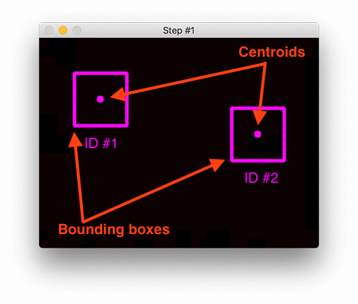

Counting Number of people using OpenCV
What is OpenCV?
OpenCV (Open Source Computer Vision Library: http://opencv.org) is an open-source library that includes several hundreds of computer vision algorithms. In simple language it is library used for Image Processing. It is mainly used to do all the operation related to Images.
What it can do?
-
Read and Write Images.
-
Detection of faces and its features.
-
Detection of shapes like Circle,rectangle etc in a image. E.g Detection of coin in images.
-
Text recognition in images. e.g Reading Number Plates/
-
Modifying image quality and colors e.g Instagram, CamScanner.
-
Developing Augmented reality apps.
and many more...
People Counter
Required Python libraries for people counting
In order to build our people counting applications, we’ll need a number of different Python libraries, including:
- NumPy
- OpenCV
- dlib
- imutils
Combining both object detection and object tracking
Highly accurate object trackers will combine the concept of object detection and object tracking into a single algorithm, typically divided into two phases:
Phase 1 — Detecting: During the detection phase we are running our computationally more expensive object tracker to (1) detect if new objects have entered our view, and (2) see if we can find objects that were “lost” during the tracking phase. For each detected object we create or update an object tracker with the new bounding box coordinates. Since our object detector is more computationally expensive we only run this phase once every N frames.
Phase 2 — Tracking: When we are not in the “detecting” phase we are in the “tracking” phase. For each of our detected objects, we create an object tracker to track the object as it moves around the frame. Our object tracker should be faster and more efficient than the object detector. We’ll continue tracking until we’ve reached the N-th frame and then re-run our object detector. The entire process then repeats.
The benefit of this hybrid approach is that we can apply highly accurate object detection methods without as much of the computational burden. We will be implementing such a tracking system to build our people counter.
Combining object tracking algorithms
Figure shows an animation demonstrating the steps in the centroid tracking algorithm.
To implement our people counter we’ll be using both OpenCV and dlib. We’ll use OpenCV for standard computer vision/image processing functions, along with the deep learning object detector for people counting.
To implement our people counter we’ll be using both OpenCV and dlib. We’ll use OpenCV for standard computer vision/image processing functions, along with the deep learning object detector for people counting.
Link to the code:
So you have completed this topic. Congratulations
Hope you learnt something new
Happy Learning!! 📚
Acknowledgments
- DevIncept Mentor
- Pyimagesearch
- Medium blog posts